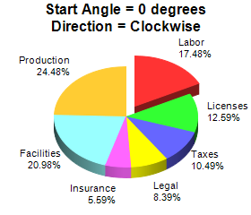
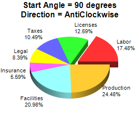

This example demonstrates different sector layout angles and directions.
By default, ChartDirector positions sectors starting from the upward pointing position, and in clockwise direction.
The start angle and layout direction can be changed using
PieChart.setStartAngle.
One common application for
PieChart.setStartAngle is to facilitate layout of pie charts containing many small sectors. Please refer to
Side Label Layout for an example.
The following is the command line version of the code in "cppdemo/anglepie". The MFC version of the code is in "mfcdemo/mfcdemo". The Qt Widgets version of the code is in "qtdemo/qtdemo". The QML/Qt Quick version of the code is in "qmldemo/qmldemo".
#include "chartdir.h"
void createChart(int chartIndex, const char *filename)
{
// The data for the pie chart
double data[] = {25, 18, 15, 12, 8, 30, 35};
const int data_size = (int)(sizeof(data)/sizeof(*data));
// The labels for the pie chart
const char* labels[] = {"Labor", "Licenses", "Taxes", "Legal", "Insurance", "Facilities",
"Production"};
const int labels_size = (int)(sizeof(labels)/sizeof(*labels));
// Create a PieChart object of size 280 x 240 pixels
PieChart* c = new PieChart(280, 240);
// Set the center of the pie at (140, 130) and the radius to 80 pixels
c->setPieSize(140, 130, 80);
// Add a title to the pie to show the start angle and direction
if (chartIndex == 0) {
c->addTitle("Start Angle = 0 degrees\nDirection = Clockwise");
} else {
c->addTitle("Start Angle = 90 degrees\nDirection = AntiClockwise");
c->setStartAngle(90, false);
}
// Draw the pie in 3D
c->set3D();
// Set the pie data and the pie labels
c->setData(DoubleArray(data, data_size), StringArray(labels, labels_size));
// Explode the 1st sector (index = 0)
c->setExplode(0);
// Output the chart
c->makeChart(filename);
//free up resources
delete c;
}
int main(int argc, char *argv[])
{
createChart(0, "anglepie0.png");
createChart(1, "anglepie1.png");
return 0;
}
© 2023 Advanced Software Engineering Limited. All rights reserved.